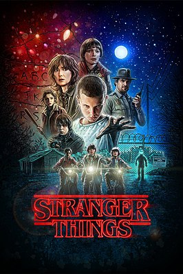
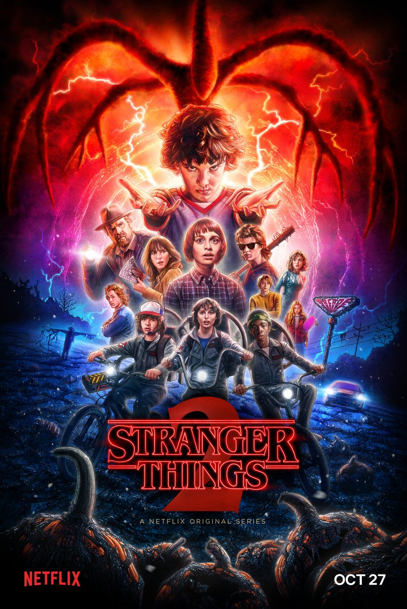
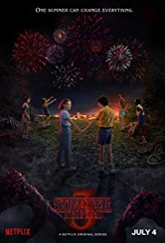
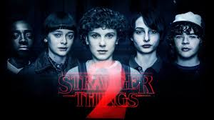
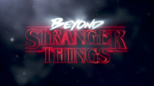

сезони

1 сезон

2 сезон

3 сезон

comic con

Про серіал
Дивні Дива (англ. Stranger Things) — американський науково-фантастичний серіал, створений братами Даффер для сервісу VOD Netflix. Всі вісім епізодів першого сезону серіалу були опубліковані 15 липня 2016 року на офіційному сайті телеканалу. Сюжет розвивається в 1983 році в штаті Індіана, де таємничим чином зникає маленький хлопчик, а його мати, друзі і шеф місцевої поліції починають пошуки зниклого. Серіал отримав високі оцінки телекритиків, які відзначили атмосферність, акторську гру і відсилання до жанрових фільмів 1980-х років.6 листопада 1983 року в штаті Індіана таємничим чином зникає 12-річний Вілл Баєрс. Мати зниклого хлопчика, Джойс (Вайнона Райдер), не знаходить собі місця, намагаючись знайти сина. За допомогою вона звертається до начальника поліції Гоппера (Девід Гарбор), який починає розслідування зникнення. Друзі Вілла теж вирушають на пошуки зниклого, але зустрічають у лісі дівчинку з незвичайними здібностями (Міллі Боббі Браун), яка щось знає про їх зниклого друга. Незабаром з'ясовується, що до зникнення якось причетна секретна урядова організація, що займається дослідженням непідвладної їй могутньої сили. Шоураннери Творцями серіалу стали 32-річні брати-близнюки Метт і Росс Даффери. Проект був задуманий за три роки до реалізації, але тоді братам не вистачало досвіду роботи на телебаченні. У 2015 році вони написали і спланували повнометражний фільм «Зачаївшись». Їх дебютом на телебаченні була робота в команді сценаристів серіалу «Сосни». «Дивні Дива» став повністю авторським проектом братів Даффер, в якому вони виступили як виконавчі продюсери, сценаристи і режисери.Актори
Новини
Netflix показав тизер третього сезону серіалу «Дивні дива»: він вийде 4 липня
На відео можна побачити нарізку новорічної програми та відлік часу до нового 1985 року. Слоган тизеру — «Одне літо, яке може змінити все». Прем’єру сезону анонсували на 4 липня 2019 року. Творці серіалу не розкривають деталей сюжету. Однак на опублікованому постері до серіалу видно, що сценаристи залишили у стрічці всіх головних героїв-дітей. Переглянути зображення у Твіттері

«Дивні дива» — це науково-фантастичний серіал, дії якого відбуваються в 1980-х роках. Перший сезон серіалу описував те, як один з головних героїв потрапив у потойбічний світ, який називають «зворотньою стороною».